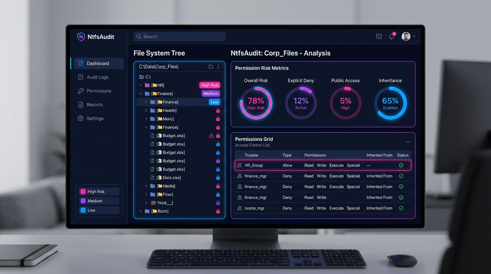
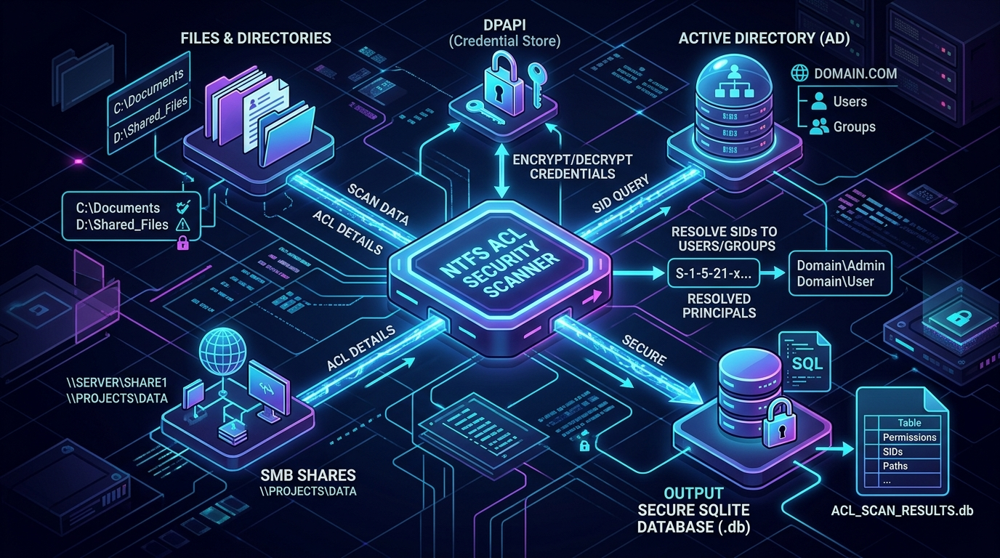
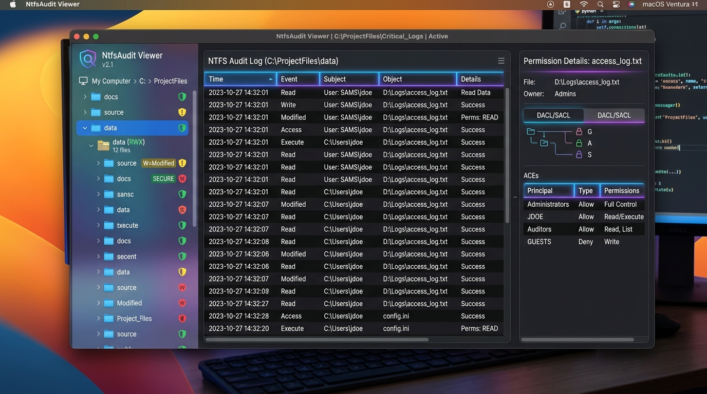

NtfsAudit is a high-performance C# suite designed to scan, analyze, and baseline filesystem permissions across local paths, UNC shares, and DFS namespaces with zero external server dependencies. NtfsAudit è una suite C# ad alte prestazioni progettata per scansionare, analizzare e confrontare i permessi del filesystem su percorsi locali, condivisioni UNC e namespace DFS senza dipendenze esterne.

From deep nested DACL parsing to Active Directory principal resolution, NtfsAudit provides safety and clarity. Dall'analisi ricorsiva delle DACL alla risoluzione dei principal in Active Directory, NtfsAudit offre sicurezza e chiarezza.
Recursively reads NTFS security descriptor Access Control Entries. Supports local, SMB, DFS namespace paths, and NAS devices. Legge ricorsivamente le Access Control Entry (ACE) NTFS. Supporta percorsi locali, SMB, namespace DFS e dispositivi NAS.
Protects target credentials using Windows Data Protection API (DPAPI) with machine-scope isolation to prevent credential theft. Protegge le credenziali di scansione tramite Windows DPAPI con isolamento a livello di macchina, impedendo la sottrazione di dati sensibili.
Uses Version 7 `.ntaudit` ZIP archive structure containing a SQLite database to enable fast, low-memory lazy loading of 5000+ folders. Sfrutta il formato archivio `.ntaudit` (v7) contenente un database SQLite per caricare in modo ultra-veloce e a basso consumo RAM oltre 5000 cartelle.
Generates clean Excel worksheets (`.xlsx`) and newline-delimited JSONL files detailing effective permissions and baseline differences. Genera fogli Excel ordinati (`.xlsx`) e record JSONL con i dettagli sui permessi effettivi calcolati e le differenze con la baseline.
Explore the primary operations of OnlyRights NtfsAudit from scan configuration to reporting. Esplora i passaggi chiave di OnlyRights NtfsAudit, dalla configurazione iniziale alla reportistica finale.

NtfsAudit supports multiple storage endpoints. When scanning UNC network shares, it dynamically parses permissions using SMB providers, falling back gracefully to NetShareGetInfo on non-Windows NAS environments. NtfsAudit supporta molteplici endpoint. Durante la scansione di share di rete UNC, analizza i permessi tramite i provider SMB, eseguendo un fallback sicuro su NetShareGetInfo in caso di NAS non Windows.
The scanner resolves Security Identifiers (SIDs) into readable Active Directory domain/group names and maps permissions to risk markers. Lo scanner traduce gli ID di sicurezza (SID) in nomi leggibili di domini/gruppi di Active Directory, associando i permessi a indicatori di rischio.

Scanned directories and permissions are written directly to a structured `.ntaudit` archive file. Large scans (5000+ folders) leverage lazy loading from a SQLite DB embedded within the archive. Le cartelle e i permessi scansionati vengono scritti in un file di archivio compresso `.ntaudit`. Le scansioni massive (oltre 5000 cartelle) utilizzano il caricamento differito (lazy load) dal database SQLite.
Run scheduled security scans in the background using the dedicated Windows service (`NtfsAudit.Service`). Jobs and schedule definitions are protected via DPAPI under `%ProgramData%`. Esegui scansioni di sicurezza pianificate in background tramite il servizio Windows dedicato (`NtfsAudit.Service`). I job e le pianificazioni sono protetti tramite DPAPI in `%ProgramData%`.
Deploy the full scanning suite or distribute the read-only viewer to security operators. Installa la suite di scansione completa o distribuisci il visualizzatore read-only agli operatori di sicurezza.
Includes the WPF scanning application, the settings panel for service scan schedules, and the background Windows Worker Service. Requires administrator elevation for deep NTFS DACL inspection. Include l'applicazione WPF di scansione, il pannello delle impostazioni per la pianificazione dei job e il servizio di background Windows. Richiede privilegi di amministratore.
Download Client MSI Scarica MSI ClientRead-only auditing client that loads and parses `.ntaudit` SQLite archives. It requires no service install or credentials store, making it perfect for off-site security analysis. Client di sola lettura che carica e visualizza gli archivi `.ntaudit` con database SQLite. Non richiede servizi aggiuntivi ed è ideale per l'analisi dei permessi offline.
Download Viewer MSI Scarica MSI Viewerpwsh -File .\scripts\build.ps1 -Runtime win-x64 -Installer